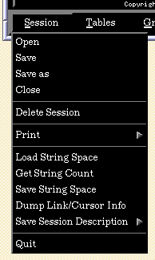

DEVise Graphical User Interface
The following menus are available in the DEVise main window:
The following buttons are available in the DEVise main window:
TEMPTEMP -- split into sections
The following keys can be used in DEVise views:
- 1 (also End)
- 2 (down) (also down_arrow)
- 3 (also Page_down)
- 4 (left) (also > . left_arrow)
- 5 (home)
- 6 (right) (also < , right_arrow)
- 7 (also Home)
- 8 (up) (also up_arrow)
- 9 (also Page_up)
- v/V (data values?)
- c/C (toggle use of connectors?)
- s/S (toggle display of symbols?)
- h/H (set histogram width to filter)
- escape or menu (raise control panel)
- etc....
3D stuff (look at Zhenhai's doc)
- X
- x
- Y
- y
- Z
- z
- w/W (wire frame?)
- d (increase depth of field?)
- D (decrease depth of field?)
- i/I (zoom in Z?)
- o/O (zoom out Z?)
- b/B (move camera back?)
- f/F (move camera forward?)
- r/R (toggle between rectangular and spherical coordinates?)
- alt:7/alt:home (toggle view locks upper left)
- alt:9/alt:page_up (toggle view locks upper right)
- alt:1/alt:end (toggle view locks lower left)
- alt:3/alt:page_down (toggle view locks lower right)
- alt:4/alt:left (toggle view locks Y size)
- alt:2/alt:down (toggle view locks X size)
- ctl:C (terminate?)
- + (increase symbol size)
- - (decrease symbol size)
- 5/begin (go home)
Session Menu

Open
Shows a dialog allowing you to select a file, and opens that file (if
possible) as a DEVise session. If you
already have a session open (that is, if you have any existing views or
windows) you will be asked to confirm that it is okay to close that session
before opening the new one.
Save
Saves the current session state to the current session file. If there
is no current session file (you created a session from scratch and haven't
yet saved it), this selection has the same effec as 'Save As'.
Save As
Shows a dialog allowing you to select a file, and saves the current
session state to that file. The prefrerred file extension for DEVise session
files is '.ds' (DEVise session). Some older files may have the extension
'.tk'.
Close
Closes the current session (destroys all windows, views, etc.). You will
be asked for confirmation before the session is actually closed.
Delete Session
Allows you to delete a session file.
Print
Load String Space
Shows a dialog allowing you to select a file, and loads the
DEVise string space from that file.
Get String Count
Shows a dialog reporting the number of strings in the
DEVise string space.
Save String Space
Shows a dialog allowing you to select a file, and saves the
DEVise string space to that file.
Dump Link/Cursor Info
Save Session Description
Quit
Quits DEVise. If you have a session open, you'll be asked for confirmation
before DEVise quits.
Tables Menu
Display
Shows a dialog allowing you to select any of the available data sources
Display Active
New
Edit
Move
Delete
GraphData Menu
Edit Mapping
Copy/Edit
Switch TData
Flush TData
View Menu
Toggle X Axis
Toggle Y Axis
Title
Fonts
Links
Cursors
Statistics
Kiviat Graph
Dimensions
Keypad Config
3D Query
Save GData
Destroy
Symbol Alignment
Window Menu
Toggle X Axis
Toggle Y Axis
New
Layout
Duplicate
Stack Control
Swap Views
Move View
Remove View
Restore View
View List
Print Config
Destroy
Color Menu
Global Foreground
Global Background
Window Foreground
Window Background
View Foreground
View Background
Cursor Foreground
Palette
Help Menu
About
Demo
History
Query Button
Mapping Button
Display/Layout Button
Stop Button
DEVise Button
Back to the user manual table of contents.